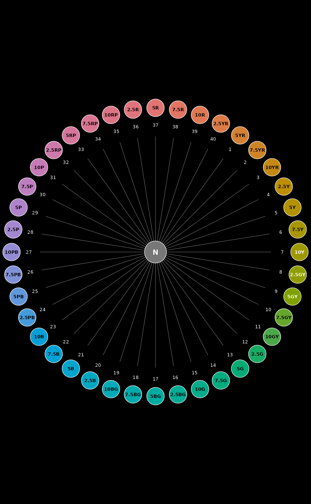

The 40 Munsell hues are typically arranged from 5R to 2.5R moving clock wise on the unit circle. This function matches a vector of hues to positions on that circle, with options for setting a custom origin or search direction.
This function is fully vectorized.
Usage
huePosition(
x,
returnHues = FALSE,
includeNeutral = FALSE,
origin = "5R",
direction = c("cw", "ccw")
)Arguments
- x
character vector of hues, e.g. c('10YR', '5YR'), optional if
returnHues = TRUE- returnHues
logical, should the full set of Munsell hues be returned? See details.
- includeNeutral
logical, add 'N' to the end of the full set of Munsell hues
- origin
hue to be used as the starting point for position searches (position 1)
- direction
indexing direction, should be
cw(clock wise) orccw(counter-clock wise)
Value
A vector of integer hue positions is returned, of the same
length and order as x. If returnHues = TRUE, then all hue
names and ordering are returned and x is ignored.
References
Soil Survey Technical Note 2 wayback machine URL
Munsell book of color. 1976. Macbeth, a Division of Kollmorgen Corp., Baltimore, MD.
Examples
# get hue ordering for setting levels of a factor
huePosition(returnHues = TRUE)
#> [1] "5R" "7.5R" "10R" "2.5YR" "5YR" "7.5YR" "10YR" "2.5Y" "5Y"
#> [10] "7.5Y" "10Y" "2.5GY" "5GY" "7.5GY" "10GY" "2.5G" "5G" "7.5G"
#> [19] "10G" "2.5BG" "5BG" "7.5BG" "10BG" "2.5B" "5B" "7.5B" "10B"
#> [28] "2.5PB" "5PB" "7.5PB" "10PB" "2.5P" "5P" "7.5P" "10P" "2.5RP"
#> [37] "5RP" "7.5RP" "10RP" "2.5R"
# get hue ordering including N (neutral)
huePosition(returnHues = TRUE, includeNeutral = TRUE)
#> [1] "5R" "7.5R" "10R" "2.5YR" "5YR" "7.5YR" "10YR" "2.5Y" "5Y"
#> [10] "7.5Y" "10Y" "2.5GY" "5GY" "7.5GY" "10GY" "2.5G" "5G" "7.5G"
#> [19] "10G" "2.5BG" "5BG" "7.5BG" "10BG" "2.5B" "5B" "7.5B" "10B"
#> [28] "2.5PB" "5PB" "7.5PB" "10PB" "2.5P" "5P" "7.5P" "10P" "2.5RP"
#> [37] "5RP" "7.5RP" "10RP" "2.5R" "N"
# get position of the '10YR' hue, relative to standard origin of '5R'
# should be 7
huePosition(x = '10YR')
#> [1] 7
# get position of the '10YR' hue, relative to standard origin of '5YR'
# should be 3
huePosition(x = '10YR', origin = '5YR')
#> [1] 3
# visualize
op <- par(mar = c(0, 0, 0, 0), fg = 'white', bg = 'black')
huePositionCircle(huePosition(returnHues = TRUE, origin = '5YR'))

par(op)